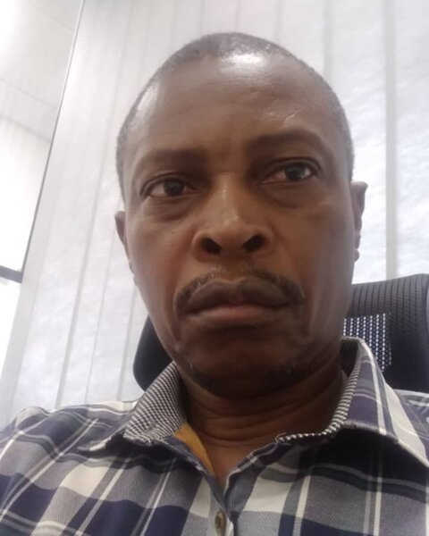

Peter Manda
Country DirectorPeter Manda is an agribusiness professional with over 30 years of experience contributing value-chain expertise to development programmes in Zambia, including 25 years in agribusiness production and marketing. He has led donor relationships, carried out market analyses, developed value chains, built business linkages and supported trade facilitation. He holds an MSc in Agronomy.